Проект нацелен на создание в Лотошино комфортных и удобных общественных пространств для всех групп населения, создание принципиально новых общественных пространств и организацию безбарьерной среды.
Все острые углы скругляются и становятся мягкими. Мощение улиц и площадей кирпичной плиткой будто сошло с фасадов окружающих зданий и заиграло яркими красками. Важная составляющая проекта заключается в раскладке нового мощения по всему городу, с градиентом от ярких тонов к серым. Так к серому дорожному бортовому камню мощение всегда подходит серым цветом, а к фасадам желтым.
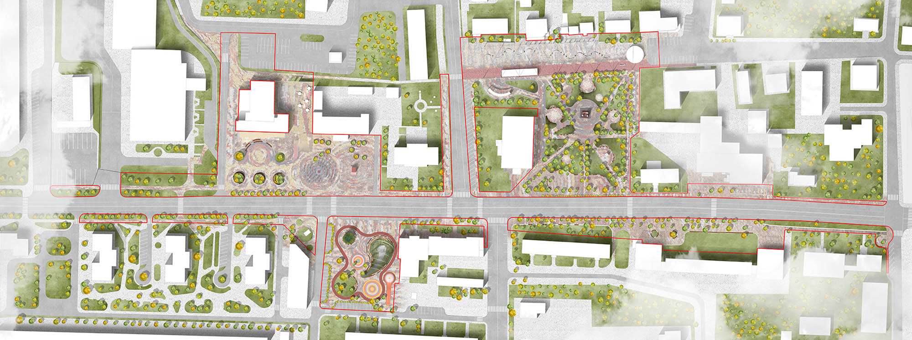
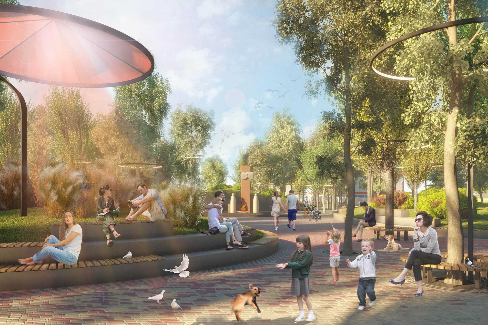
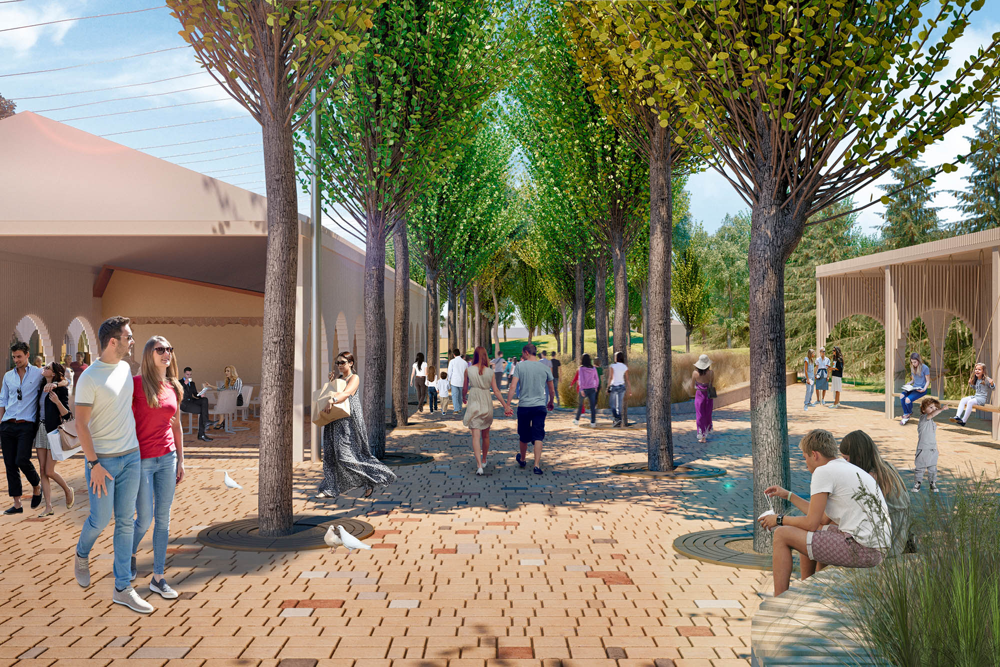
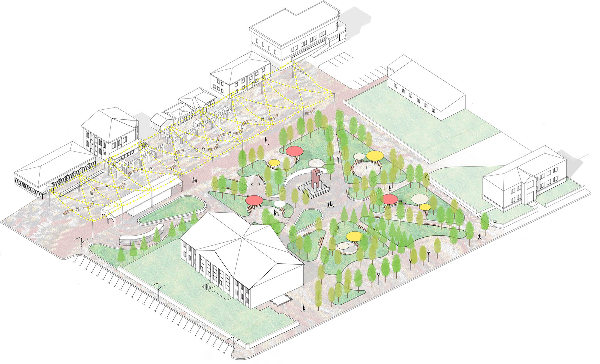
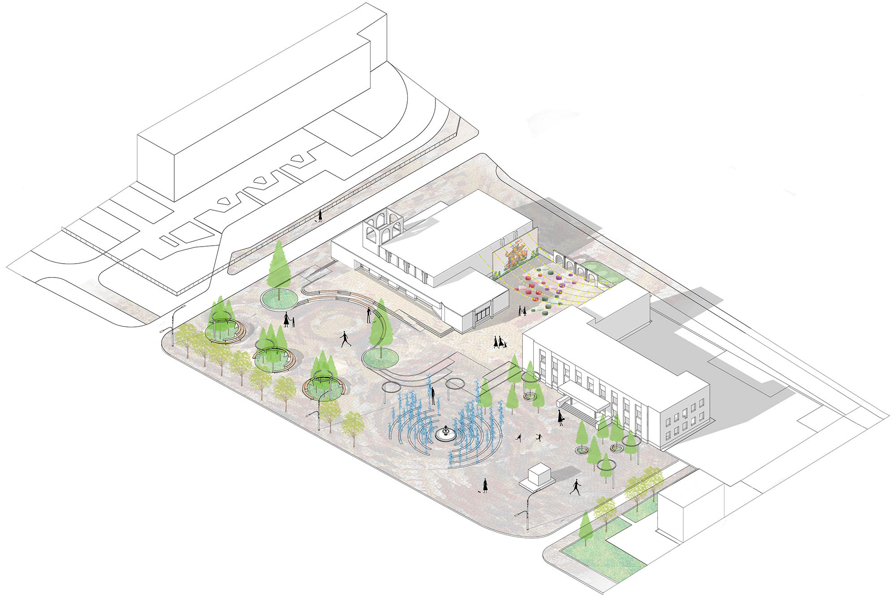
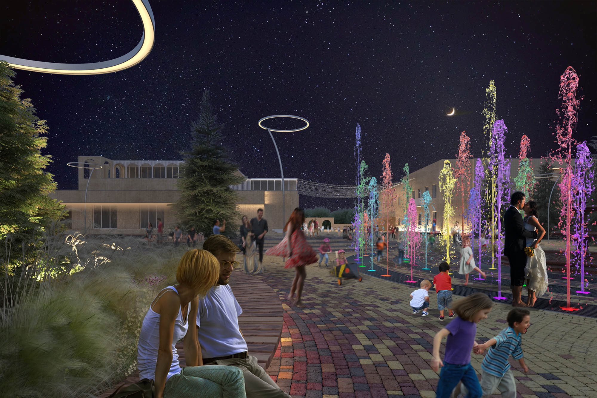
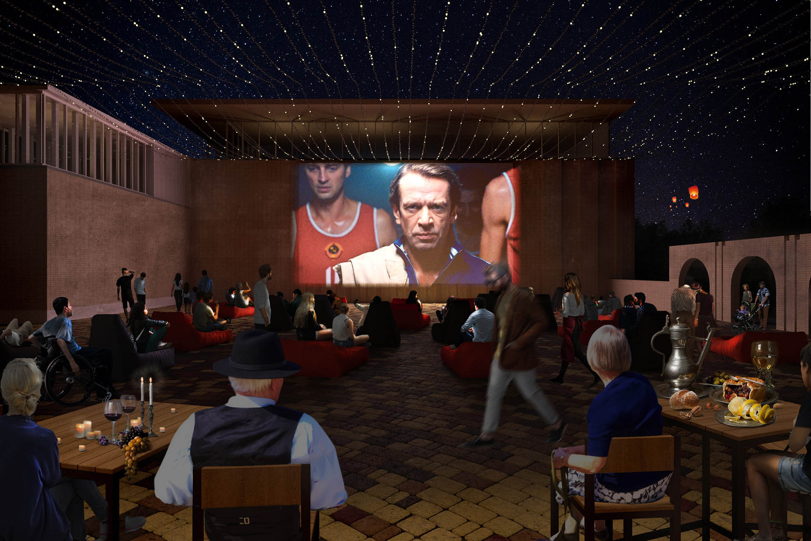
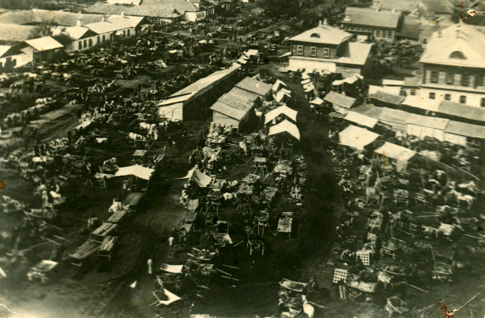
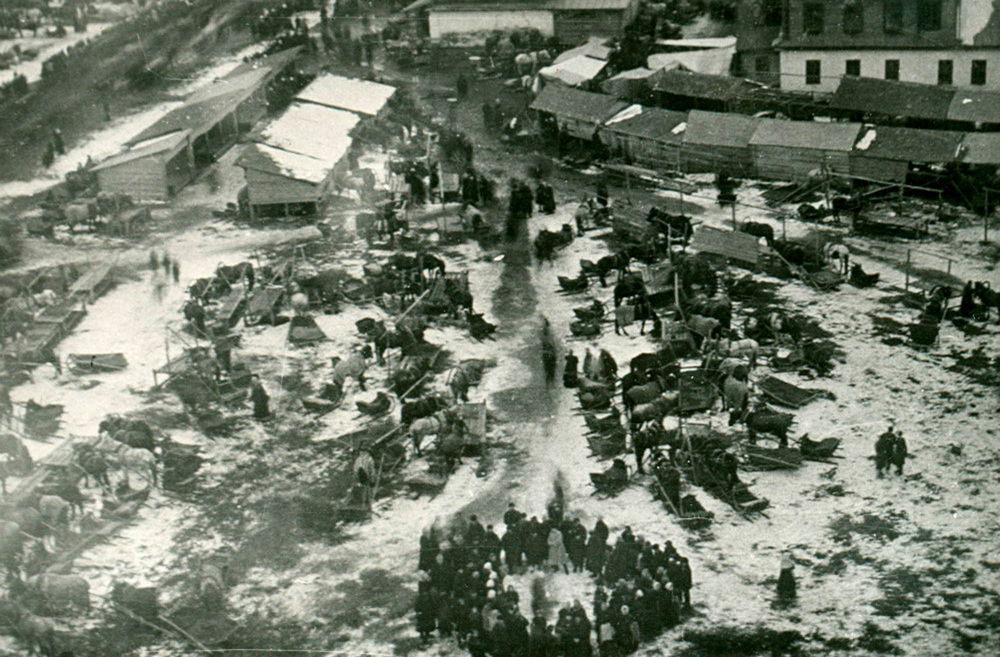
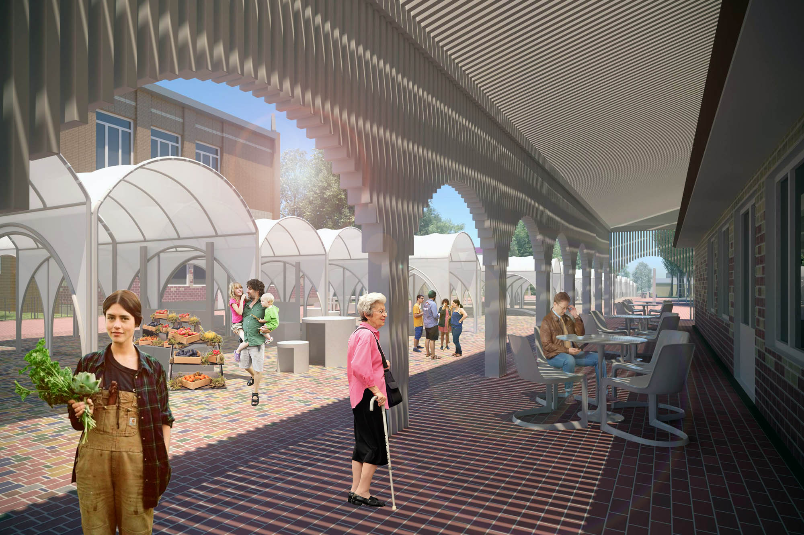
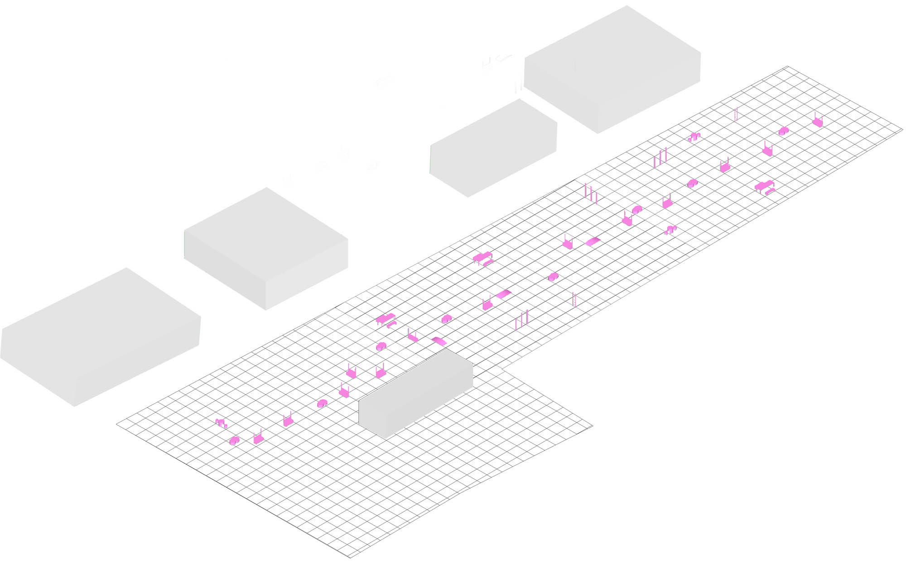
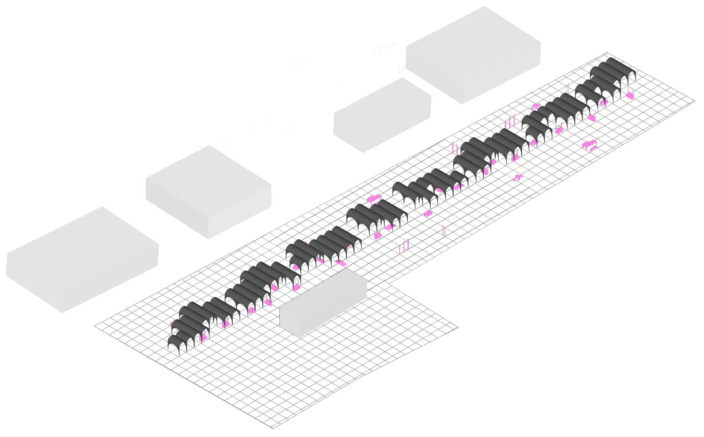
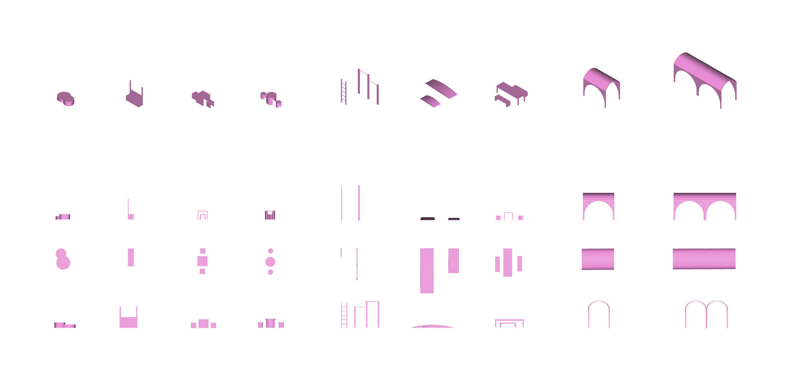
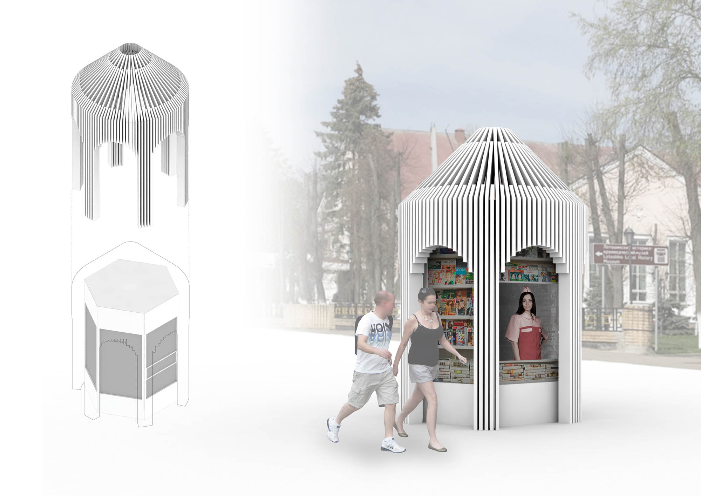